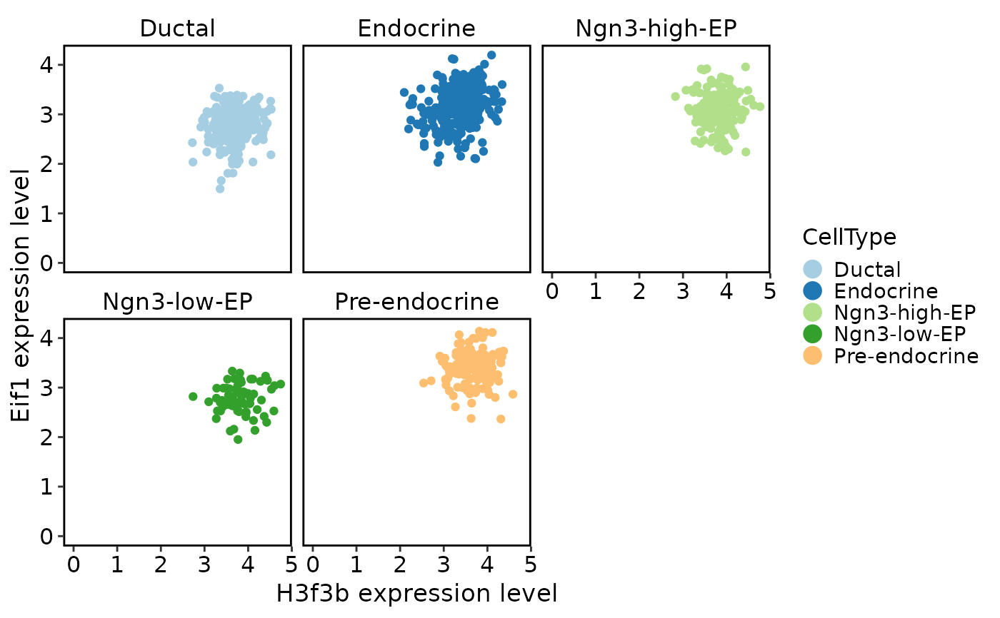
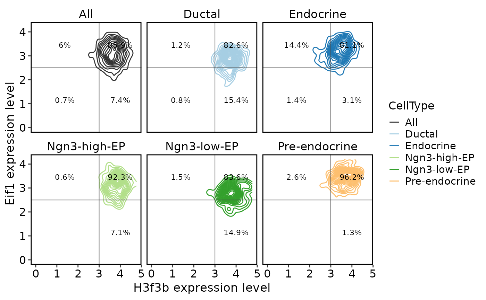
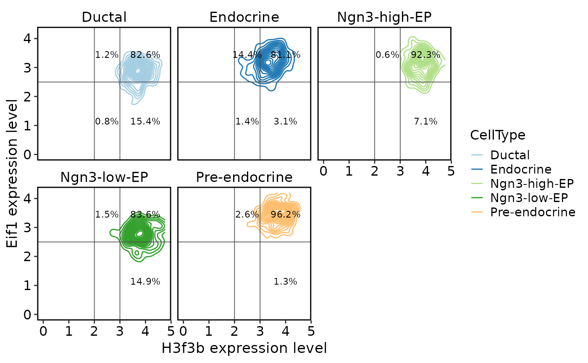
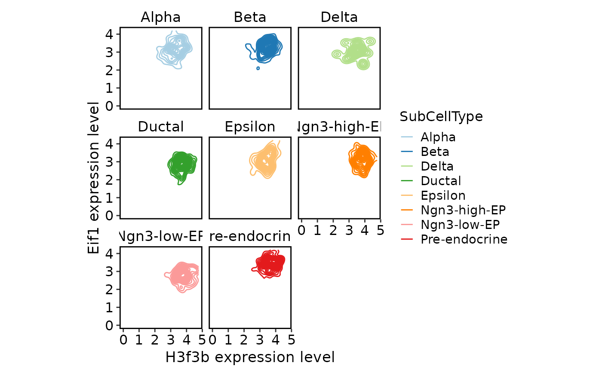

TACS is a method for plotting a FACS-like plot for two features based on sc-RNA-seq data. For each of two query features, 100 features with similar expression patterns are selected and ranked by their Pearson correlation with the query. In a process akin to compensation, the intersection of the feature lists is removed from each list. The log normalized expression of the resulting features are then averaged within each cell, and the resulting quantities are plotted. This function is based on a simple scheme: choose features similar to the ones specified and average them to reduce the noise.
Usage
TACSPlot(
srt,
ref_srt = NULL,
assay = "RNA",
layer = "data",
group.by = NULL,
feature1,
feature2,
cutoffs = NULL,
density = FALSE,
palette = "Paired",
num_features_add = 100,
features_predetermined = FALSE,
aggregator = "sum",
remove_outliers = FALSE,
aspect.ratio = 1,
title = NULL,
subtitle = NULL,
xlab = NULL,
ylab = NULL,
suffix = " expression level",
legend.position = "right",
legend.direction = "vertical",
theme_use = "theme_scop",
theme_args = list(),
include_all = FALSE,
all_color = "grey20",
quadrants_line_color = "grey30",
quadrants_line_type = "solid",
quadrants_line_width = 0.3,
quadrants_label_size = 3,
density_alpha = NULL,
bins = 20,
h = NULL,
nrow = NULL,
ncol = NULL,
verbose = TRUE,
...
)Arguments
- srt
A Seurat object.
- ref_srt
A Seurat object. If your dataset is perturbed in a way that would substantially alter feature-feature correlations, for example if different time points are present or certain cell types are mostly depleted, you can feed in a reference srt, and TACS will choose axes based on the reference data. Default is
NULL.- assay
The assay to use. Default is
"RNA".- layer
The layer to use. Default is
"data".- group.by
The variable to group the cells by. Default is
NULL.- feature1
Horizontal axis on plot mimics this feature. Character, usually length 1 but possibly longer.
- feature2
Vertical axis on plot mimics this feature. Character, usually length 1 but possibly longer.
- cutoffs
If given, divide plot into four quadrants and annotate with percentages. Can be a numeric vector of length 1 or 2, or a list of two numeric vectors for x and y axes respectively.
- density
If
TRUE, plot contours instead of points.- palette
The palette to use. Default is
"Paired".- num_features_add
Each axis shows a simple sum of similar features. This is how many (before removing overlap).
- features_predetermined
If
FALSE, plot the sum of many features similar to feature1 instead of feature1 alone (same for feature2). See GetSimilarFeatures. IfTRUE, plot the sum of only the features given.- aggregator
How to combine correlations when finding similar features. Options:
"sum"(default),"min"(for "and"-like filter),"max", or"mean".- remove_outliers
If
TRUE, remove outliers from the plot. Default isFALSE.- aspect.ratio
The aspect ratio of the plot. Default is
1.- title
The title of the plot.
- subtitle
The subtitle of the plot.
- xlab
The x-axis label.
- ylab
The y-axis label.
- suffix
The suffix of the axis labels. Default is
" expression level".- legend.position
The position of the legend. Default is
"right".- legend.direction
The direction of the legend. Default is
"vertical".- theme_use
The theme to use. Default is
"theme_scop".- theme_args
A list of arguments for the theme. Default is
list().- include_all
If
TRUE, include a panel with all cells. Default isFALSE.- all_color
The color of the all cells panel. Default is
"grey20".- quadrants_line_color
The color of the quadrants lines. Default is
"grey30".- quadrants_line_type
The type of the quadrants lines. Default is
"solid".- quadrants_line_width
The width of the quadrants lines. Default is
0.3.- quadrants_label_size
The size of the quadrants labels. Default is
3.- density_alpha
The alpha of the density plot. Default is
NULL.- bins
Number of bins for density plot. Default is
20.- h
Bandwidth for density plot. Default is
NULL.- nrow
The number of rows for the facet plot. Default is
NULL.- ncol
The number of columns for the facet plot. Default is
NULL.- verbose
Whether to print the message. Default is
TRUE.- ...
Additional parameters passed to ggplot2::stat_density2d.
Examples
data(pancreas_sub)
pancreas_sub <- standard_scop(pancreas_sub)
#> ℹ [2025-09-13 07:48:18] Start standard scop workflow...
#> ℹ [2025-09-13 07:48:19] Checking a list of <Seurat> object...
#> ! [2025-09-13 07:48:19] Data 1/1 of the `srt_list` is "unknown"
#> ℹ [2025-09-13 07:48:19] Perform `NormalizeData()` with `normalization.method = 'LogNormalize'` on the data 1/1 of the `srt_list`...
#> ℹ [2025-09-13 07:48:21] Perform `Seurat::FindVariableFeatures()` on the data 1/1 of the `srt_list`...
#> ℹ [2025-09-13 07:48:22] Use the separate HVF from srt_list
#> ℹ [2025-09-13 07:48:22] Number of available HVF: 2000
#> ℹ [2025-09-13 07:48:22] Finished check
#> ℹ [2025-09-13 07:48:22] Perform `Seurat::ScaleData()` on the data...
#> Warning: Different features in new layer data than already exists for scale.data
#> ℹ [2025-09-13 07:48:23] Perform pca linear dimension reduction on the data...
#> StandardPC_ 1
#> Positive: Aplp1, Cpe, Gnas, Fam183b, Map1b, Hmgn3, Pcsk1n, Chga, Tuba1a, Bex2
#> Syt13, Isl1, 1700086L19Rik, Pax6, Chgb, Scgn, Rbp4, Scg3, Gch1, Camk2n1
#> Cryba2, Pcsk2, Pyy, Tspan7, Mafb, Hist3h2ba, Dbpht2, Abcc8, Rap1b, Slc38a5
#> Negative: Spp1, Anxa2, Sparc, Dbi, 1700011H14Rik, Wfdc2, Gsta3, Adamts1, Clu, Mgst1
#> Bicc1, Ldha, Vim, Cldn3, Cyr61, Rps2, Mt1, Ptn, Phgdh, Nudt19
#> Smtnl2, Smco4, Habp2, Mt2, Col18a1, Rpl12, Galk1, Cldn10, Acot1, Ccnd1
#> StandardPC_ 2
#> Positive: Rbp4, Tagln2, Tuba1b, Fkbp2, Pyy, Pcsk2, Iapp, Tmem27, Meis2, Tubb4b
#> Pcsk1n, Dbpht2, Rap1b, Dynll1, Tubb2a, Sdf2l1, Scgn, 1700086L19Rik, Scg2, Abcc8
#> Atp1b1, Hspa5, Fam183b, Papss2, Slc38a5, Scg3, Mageh1, Tspan7, Ppp1r1a, Ociad2
#> Negative: Neurog3, Btbd17, Gadd45a, Ppp1r14a, Neurod2, Sox4, Smarcd2, Mdk, Pax4, Btg2
#> Sult2b1, Hes6, Grasp, Igfbpl1, Gpx2, Cbfa2t3, Foxa3, Shf, Mfng, Tmsb4x
#> Amotl2, Gdpd1, Cdc14b, Epb42, Rcor2, Cotl1, Upk3bl, Rbfox3, Cldn6, Cer1
#> StandardPC_ 3
#> Positive: Nusap1, Top2a, Birc5, Aurkb, Cdca8, Pbk, Mki67, Tpx2, Plk1, Ccnb1
#> 2810417H13Rik, Incenp, Cenpf, Ccna2, Prc1, Racgap1, Cdk1, Aurka, Cdca3, Hmmr
#> Spc24, Kif23, Sgol1, Cenpe, Cdc20, Hist1h1b, Cdca2, Mxd3, Kif22, Ska1
#> Negative: Anxa5, Pdzk1ip1, Acot1, Tpm1, Anxa2, Dcdc2a, Capg, Sparc, Ttr, Pamr1
#> Clu, Cxcl12, Ndrg2, Hnf1aos1, Gas6, Gsta3, Krt18, Ces1d, Atp1b1, Muc1
#> Hhex, Acadm, Spp1, Enpp2, Bcl2l14, Sat1, Smtnl2, 1700011H14Rik, Tgm2, Fam159a
#> StandardPC_ 4
#> Positive: Glud1, Tm4sf4, Akr1c19, Cldn4, Runx1t1, Fev, Pou3f4, Gm43861, Pgrmc1, Arx
#> Cd200, Lrpprc, Hmgn3, Ppp1r14c, Pam, Etv1, Tsc22d1, Slc25a5, Akap17b, Pgf
#> Fam43a, Emb, Jun, Krt8, Dnajc12, Mid1ip1, Ids, Rgs17, Uchl1, Alcam
#> Negative: Ins2, Ins1, Ppp1r1a, Nnat, Calr, Sytl4, Sdf2l1, Iapp, Pdia6, Mapt
#> G6pc2, C2cd4b, Npy, Gng12, P2ry1, Ero1lb, Adra2a, Papss2, Arhgap36, Fam151a
#> Dlk1, Creld2, Gip, Tmem215, Gm27033, Cntfr, Prss53, C2cd4a, Lyve1, Ociad2
#> StandardPC_ 5
#> Positive: Pdx1, Nkx6-1, Npepl1, Cldn4, Cryba2, Fev, Jun, Chgb, Gng12, Adra2a
#> Mnx1, Sytl4, Pdk3, Gm27033, Nnat, Chga, Ins2, 1110012L19Rik, Enho, Krt7
#> Mlxipl, Tmsb10, Flrt1, Pax4, Tubb3, Prrg2, Gars, Frzb, BC023829, Gm2694
#> Negative: Irx2, Irx1, Gcg, Ctxn2, Tmem27, Ctsz, Tmsb15l, Nap1l5, Pou6f2, Gria2
#> Ghrl, Peg10, Smarca1, Arx, Lrpap1, Rgs4, Ttr, Gast, Tmsb15b2, Serpina1b
#> Slc16a10, Wnk3, Ly6e, Auts2, Sct, Arg1, Dusp10, Sphkap, Dock11, Edn3
#> ℹ [2025-09-13 07:48:24] Perform `Seurat::FindClusters()` with louvain and `cluster_resolution` = 0.6 on the data...
#> ℹ [2025-09-13 07:48:24] Reorder clusters...
#> ! [2025-09-13 07:48:24] Using `Seurat::AggregateExpression()` to calculate pseudo-bulk data for <Assay5>
#> ℹ [2025-09-13 07:48:24] Perform umap nonlinear dimension reduction on the data...
#> ℹ [2025-09-13 07:48:24] Non-linear dimensionality reduction (umap) using (Standardpca) dims (1-50) as input
#> ℹ [2025-09-13 07:48:24] UMAP will return its model
#> 07:48:24 UMAP embedding parameters a = 0.9922 b = 1.112
#> 07:48:24 Read 1000 rows and found 50 numeric columns
#> 07:48:24 Using Annoy for neighbor search, n_neighbors = 30
#> 07:48:24 Building Annoy index with metric = cosine, n_trees = 50
#> 0% 10 20 30 40 50 60 70 80 90 100%
#> [----|----|----|----|----|----|----|----|----|----|
#> *
#> *
#> *
#> *
#> *
#> *
#> *
#> *
#> *
#> *
#> *
#> *
#> *
#> *
#> *
#> *
#> *
#> *
#> *
#> *
#> *
#> *
#> *
#> *
#> *
#> *
#> *
#> *
#> *
#> *
#> *
#> *
#> *
#> *
#> *
#> *
#> *
#> *
#> *
#> *
#> *
#> *
#> *
#> *
#> *
#> *
#> *
#> *
#> *
#> *
#> |
#> 07:48:24 Writing NN index file to temp file /tmp/RtmpATKt2U/file23254b6fd316
#> 07:48:24 Searching Annoy index using 2 threads, search_k = 3000
#> 07:48:24 Annoy recall = 100%
#> 07:48:25 Commencing smooth kNN distance calibration using 2 threads
#> with target n_neighbors = 30
#> 07:48:27 Initializing from normalized Laplacian + noise (using RSpectra)
#> 07:48:27 Commencing optimization for 200 epochs, with 39304 positive edges
#> 07:48:27 Using rng type: pcg
#> 07:48:28 Optimization finished
#> ℹ [2025-09-13 07:48:28] Non-linear dimensionality reduction (umap) using (Standardpca) dims (1-50) as input
#> ℹ [2025-09-13 07:48:28] UMAP will return its model
#> 07:48:28 UMAP embedding parameters a = 0.9922 b = 1.112
#> 07:48:28 Read 1000 rows and found 50 numeric columns
#> 07:48:28 Using Annoy for neighbor search, n_neighbors = 30
#> 07:48:28 Building Annoy index with metric = cosine, n_trees = 50
#> 0% 10 20 30 40 50 60 70 80 90 100%
#> [----|----|----|----|----|----|----|----|----|----|
#> *
#> *
#> *
#> *
#> *
#> *
#> *
#> *
#> *
#> *
#> *
#> *
#> *
#> *
#> *
#> *
#> *
#> *
#> *
#> *
#> *
#> *
#> *
#> *
#> *
#> *
#> *
#> *
#> *
#> *
#> *
#> *
#> *
#> *
#> *
#> *
#> *
#> *
#> *
#> *
#> *
#> *
#> *
#> *
#> *
#> *
#> *
#> *
#> *
#> *
#> |
#> 07:48:28 Writing NN index file to temp file /tmp/RtmpATKt2U/file23252f9af645
#> 07:48:28 Searching Annoy index using 2 threads, search_k = 3000
#> 07:48:28 Annoy recall = 100%
#> 07:48:30 Commencing smooth kNN distance calibration using 2 threads
#> with target n_neighbors = 30
#> 07:48:31 Initializing from normalized Laplacian + noise (using RSpectra)
#> 07:48:31 Commencing optimization for 200 epochs, with 39304 positive edges
#> 07:48:31 Using rng type: pcg
#> 07:48:33 Optimization finished
#> ✔ [2025-09-13 07:48:33] Run scop standard workflow done
TACSPlot(
pancreas_sub,
feature1 = "H3f3b",
feature2 = "Eif1",
group.by = "CellType"
)

TACSPlot(
pancreas_sub,
feature1 = "H3f3b",
feature2 = "Eif1",
group.by = "CellType",
density = TRUE,
include_all = TRUE,
cutoffs = c(3, 2.5)
)

TACSPlot(
pancreas_sub,
feature1 = "H3f3b",
feature2 = "Eif1",
group.by = "CellType",
density = TRUE,
cutoffs = list(x = c(2, 3), y = c(2.5))
)

TACSPlot(
pancreas_sub,
feature1 = "H3f3b",
feature2 = "Eif1",
group.by = "SubCellType",
density = TRUE
)
